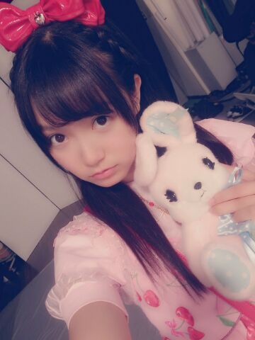
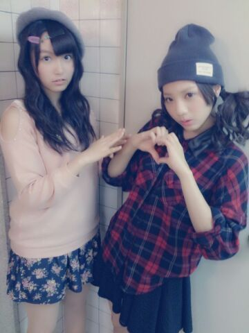
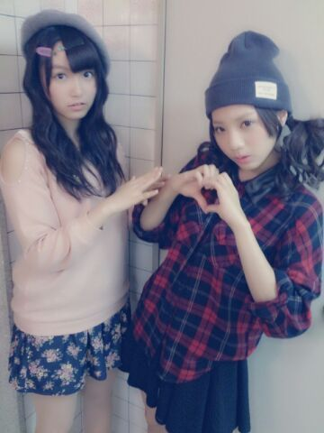

| 2013/10 12 Sat | ひめたん(*>ω<*)そ の354 |

ロリータひめたん
ロリータだーやったーって元気に着替えてたら
衣装さんが張り切ってここぞとばかりに
小道具だしてくださったんだよー
おっきなりぼん、はーとのバッグ、ネックレス、
さくらんぼの靴下、うさぎのおともだち......
全身を写めで撮ってないんだなーこれが
ヒキが出た方は是非チェックしてね
チェックしないと以下自重
よろしくねーっ
前々回の記事のコメント
改めて全部読みました(´;ω;｀)
他の子推しだけどコメしてみたよーとか
初コメだよーって方もたくさんいらっしゃって
本当に感謝です。ありがとうございました！
それから前回の記事にも
代々木の感想たくさん書いていただいて
お勉強になりましたっ
コメント読んでる時間ってほんと楽しいのな。
電車ん中とか寝る前とかに
ひとりでコメント読んでるんだけど
ひとりじゃないみたいになるのな
錯覚？そんなことないよね( ^ω^ )ね
7th製作はじまってます！
みおちゃん (堀未央奈ちゃん)とも
なかよしなったんだよ(〃ω〃)ねーみおちゃんっ
あれですねー
学年・故郷・誕生日が近いって
なんてゆーかいいよね。
製作期間中は衣装の関係で
撮れたての写めが貼れないのが悲しい......
＼ ひめたんは照れ屋さん ／

直球すぎると おっとっとってなって
手が出るんでしょうねきっと
この先の物語は
ご自由に作ってみてください
ちなみに現在地はお手洗い。とりあ外に出よう。
さてっ明日は
6thシングル最後の個握です！幕張会場！
これが終わったら次は
12月まで握手会ないんだねー
寂しいな(´;ω;｀)あっ別に泣いてなんか(´;ω;｀)
気をつけてお越しくださいねー
ハロウィンハロウィン♪
ねえ、東京の空気は乾燥してるんだけど
のど かっすかすになりそうなんだけど
みなさんは大丈夫かしらー？
そして完っ全っに忘れてたけど
火曜からテストだった。おわた！
ロリータひめたん
ロリータだーやったーって元気に着替えてたら
衣装さんが張り切ってここぞとばかりに
小道具だしてくださったんだよー
おっきなりぼん、はーとのバッグ、ネックレス、
さくらんぼの靴下、うさぎのおともだち......
全身を写めで撮ってないんだなーこれが
ヒキが出た方は是非チェックしてね
チェックしないと以下自重
よろしくねーっ
前々回の記事のコメント
改めて全部読みました(´;ω;｀)
他の子推しだけどコメしてみたよーとか
初コメだよーって方もたくさんいらっしゃって
本当に感謝です。ありがとうございました！
それから前回の記事にも
代々木の感想たくさん書いていただいて
お勉強になりましたっ
コメント読んでる時間ってほんと楽しいのな。
電車ん中とか寝る前とかに
ひとりでコメント読んでるんだけど
ひとりじゃないみたいになるのな
錯覚？そんなことないよね( ^ω^ )ね
7th製作はじまってます！
みおちゃん (堀未央奈ちゃん)とも
なかよしなったんだよ(〃ω〃)ねーみおちゃんっ
あれですねー
学年・故郷・誕生日が近いって
なんてゆーかいいよね。
製作期間中は衣装の関係で
撮れたての写めが貼れないのが悲しい......
＼ ひめたんは照れ屋さん ／

直球すぎると おっとっとってなって
手が出るんでしょうねきっと
この先の物語は
ご自由に作ってみてください
ちなみに現在地はお手洗い。とりあ外に出よう。
さてっ明日は
6thシングル最後の個握です！幕張会場！
これが終わったら次は
12月まで握手会ないんだねー
寂しいな(´;ω;｀)あっ別に泣いてなんか(´;ω;｀)
気をつけてお越しくださいねー
ハロウィンハロウィン♪
ねえ、東京の空気は乾燥してるんだけど
のど かっすかすになりそうなんだけど
みなさんは大丈夫かしらー？
そして完っ全っに忘れてたけど
火曜からテストだった。おわた！

 卒業研究のピークがやってきた
卒業研究のピークがやってきた
メンタルやられてます
ひめたん助けて
大丈夫かーいーなー(´・ω・｀)
ラストの課題やで！集大成！
悔いのないよう精一杯やっちゃってくださいな。
ひめたんっていくちゃんと初めて会った時の
第一印象って覚えてる？
これはるんるんも含めてだけど
お互いがお互いのことを
「この子たち同い年か。絶対仲良くなれないな」
って思ってたって
最近になってゆってる＼(^O^)／
ひめたんは何でいつも笑顔なんですか？ニヤリ
アイドルだからですどやあああああ！
......なんてね。
活動が楽しくて、
みなさんと会えて楽しいからよー♪
ひめたんは好きなブランドとかありますか？
あんまブランドにこだわらない人だけどー
最近よく着るのは
earth music&ecology
LODISPOTTOとかかなあ
ワンピならLIZ LISAとかも好きです(*^ω^*)
もしもひめたんがサッカーやるなら
どのボジションやって見たいですか
あんま詳しくしらないけど
キーパーは怖いい......
だからキーパーやってるひとかっこいーと思うっ
いつも質問コーナーやってるけど
どこに書けば質問答えてもらえる？
最近は記事のコメント欄から
答えるようにしました！
でも、この質問は最近答えたなーとか
いろいろ考えて載せてるので
答えられなかったらごめんなさい(´・ω・｀)
載せるのに時間がかかっちゃうこともあります。
来年の春からバスガイドとして働くんだけど
ひめたんはバスガイドさんってどう思う？
バスガイドさん！憧れてる職業のひとつです！
わーいいないいなーとってもステキだよね
ひめたんもね自分の声で誰かを楽しませるの
将来やってみたいんだー
応援してまーすー☆
僕をひめたんにとっての
永遠の46番にして下さい！！ （告白）笑
喜んで。セリフチョイスに拍手。
りぼん！頑張ってさがしてみる！
私もお揃いで...とか、ダメかな？ダメかなっ？
迷惑じゃないかなっ？
ありがとーやたあー＼(^O^)／
え、そして全然まったくダメじゃないよ
オソロっちしよしよー＊
ひめたんは乃木坂一？の妹キャラだけど、
ひめたんから見て一番の
お姉さんキャラはだーれ？
乃木坂いちです(〃ω〃)断言していーんだよー(笑)
ひめたんからしたらみーんなお姉さんだけど
やっぱりまいまい(深川麻衣ちゃん)とか
みさみさ(衛藤美彩ちゃん)とかかなー
ひめたんってマンガ好き？
あんま読まないです
でも気になる作品はなんこかあるっ
同い年だけど、握手行ってもいいですか？
ぜひ！待ってまーす( ^ω^ )/
明日の乃木どこでは
３人で真面目にお話しておりますよー
ぜひチェックしてみてくださいっ
あっそうそう
今日会社行ってプレゼント受け取りました！
お手紙も読むね。本当にありがとうっ

(＊´・ω・＊)
コメント(376)
2013/10/12 23:00